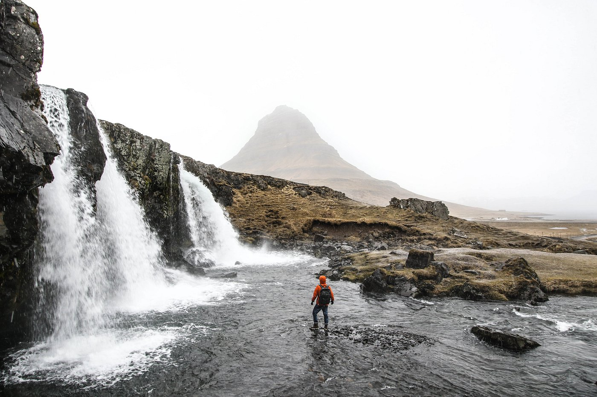
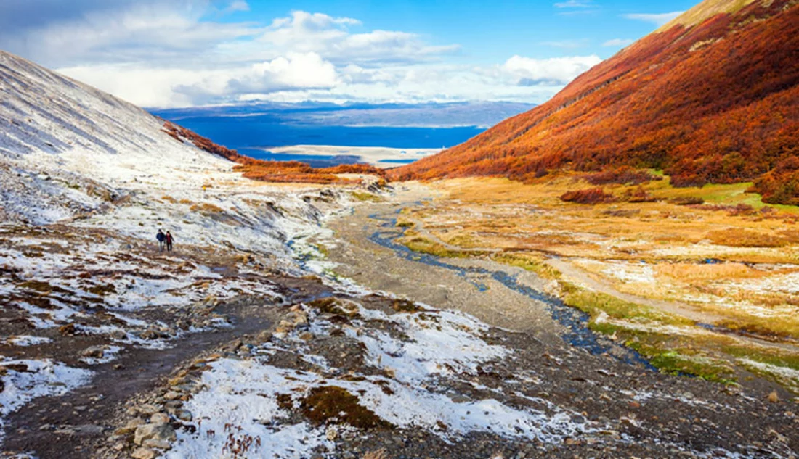

<!DOCTYPE html>
<html lang="en">
<head>
    <meta charset="UTF-8">
    <meta http-equiv="X-UA-Compatible" content="IE=edge">
    <meta name="viewport" content="width=device-width, initial-scale=1.0">
    <link rel="stylesheet" type="text/css" href="style.css">
    <link href="https://cdn.jsdelivr.net/npm/bootstrap@5.1.1/dist/css/bootstrap.min.css" rel="stylesheet" integrity="sha384-F3w7mX95PdgyTmZZMECAngseQB83DfGTowi0iMjiWaeVhAn4FJkqJByhZMI3AhiU" crossorigin="anonymous">
    <title>Travel</title>
</head>
<body>
    
</body>
</html>
<body>
    <h1> Thailand </h1>
    <div class="flexbox-container">
        <div class="flexbox-item flexone">
                        
        </div>
        <div class="flexbox-item flextwo">
        <p> From the majestic five-star hotels in Bangkok to simple beach huts in Koh Samui or Koh Samet, accommodation choices are many. From the stunning plains and hills of the Golden Triangle to the wave-lapped white sand beaches of Phuket, Samui and Krabi, the kingdom radiates beauty. Thailand has so much to offer that one visit is never enough – you'll want to come back and discover more time after time.</p>
        </div> 
        <div class="flexbox-item flexthree">
            
        </div>
    </div>
    <div class="flexbox-container container2">
        <div class="flexbox-item flexfour">
         <p>The last time I was in Thailand was when I was about 10 years ago. I don't remember much, but there's one thing I remember is that I ate a live crab from a beach because my dad says it was edible. </p>
        </div>
    </div>
    <h1> Iceland </h1>
    <div class="flexbox-container container3">
        <div class="felxbox-item flexfive">
            <p> Iceland has so many sightseeing spots you can check out that is worth seeing in person. Iceland is not made of ice! In fact, it's a lot more greener than Greenland. </p>
        </div>
        <div class="flexbox-item flexsix">
            
        </div>
        <div class="flexbox-item flexseven">
            <p> Since Iceland is located north, you might get to see the Aurora Borealis if you have a chance. The best time to see the Northern Lights is during the winter, between September and April, when dark and long nights have taken over from the bright summernights in Iceland. I will hopefully go there someday, just once. </p>
        </div>
    </div>
    <div class="flexbox-container container4">
        <h1> Argentina </h1>
        <div class="flexbox-item flexeight">
            <p> Argentina is an overall a beautiful country with interesting history and culture, thriving nightlife, and unique local cuisine. For me, I've alwasy wanted to visit the most southermost city in the world, Ushuaia.    </p>
        </div>
    </div>
    <div class="flexbox-container container5">
        <div class="flexbox-item flexnine">
            
        </div>
    </div>
    </div>
    
    
</body>